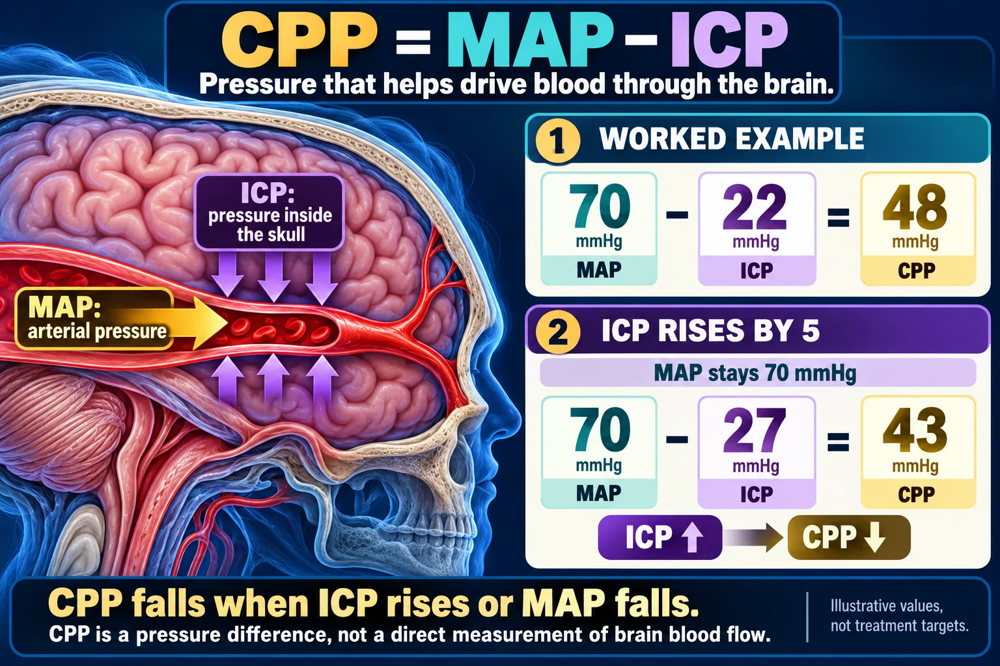

MAP · Driving pressure
Mean arterial pressure contributes to the pressure driving blood toward the brain.
Understand the subtraction, practice the calculation, and see why rising intracranial pressure can reduce perfusion.
The pressure difference, expressed in mmHg.
When mean arterial pressure stays unchanged.
When intracranial pressure stays unchanged.
CPP = mean arterial pressure minus intracranial pressure.
Mean arterial pressure contributes to the pressure driving blood toward the brain.
Intracranial pressure acts against cerebral perfusion. If MAP stays fixed and ICP rises, CPP falls.

Worked example: CPP = 70 − 22 = 48 mmHg. With MAP unchanged at 70 and ICP rising to 27, CPP falls to 43 mmHg.
Open full-size graphic ↗ · Source 1 · Source 2Cerebral perfusion pressure: MAP − ICP Subtract the opposing intracranial pressure from mean arterial pressure. MAP 70 mmHg ICP 22 mmHg CPP 48 mmHg − = If ICP rises by 5 while MAP stays the same: 70 − 27 = 43 mmHg CPP falls when ICP rises or MAP falls. The pressure difference helps assess perfusion; it is not a direct measurement of brain blood flow.
Change one pressure and observe how CPP responds.
Practice calculation only. This tool does not set treatment targets or measure brain blood flow.
CPP falls from 48 to 43 mmHg. The 5 mmHg increase in ICP produces a 5 mmHg decrease in CPP when MAP is unchanged.
Interpret the calculated value in context.
The current course page states CPP above 50 mmHg, ideally 60–70. The 48 mmHg example is below the course threshold.
Brain Trauma Foundation guidance recommends a CPP target of 60–70 mmHg for adult severe traumatic brain injury. Use the prescribed patient-specific target and monitoring plan.
Brain Trauma Foundation: Guidelines for severe TBI, fourth edition